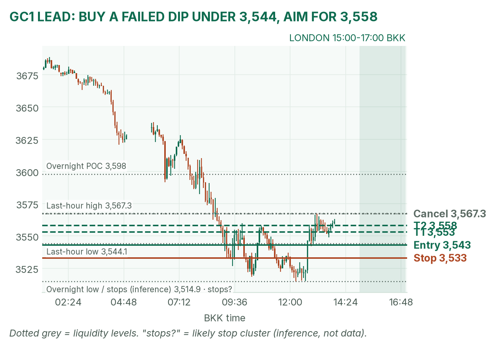
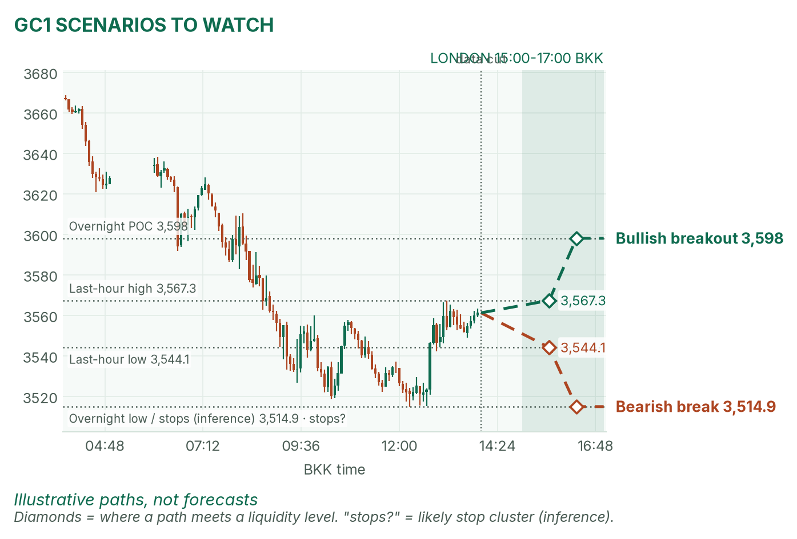
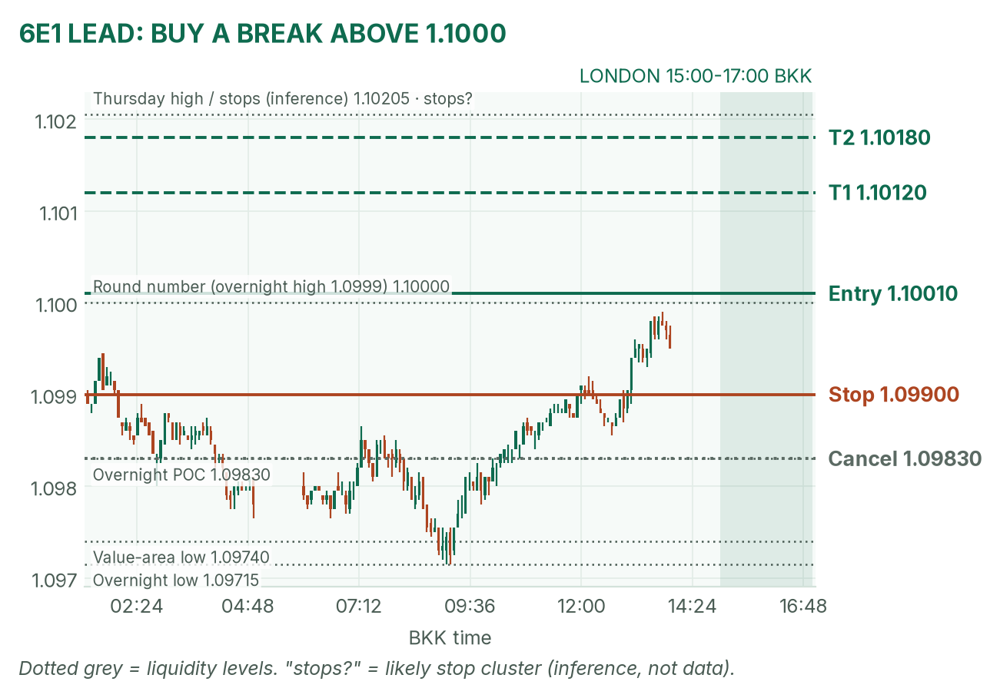
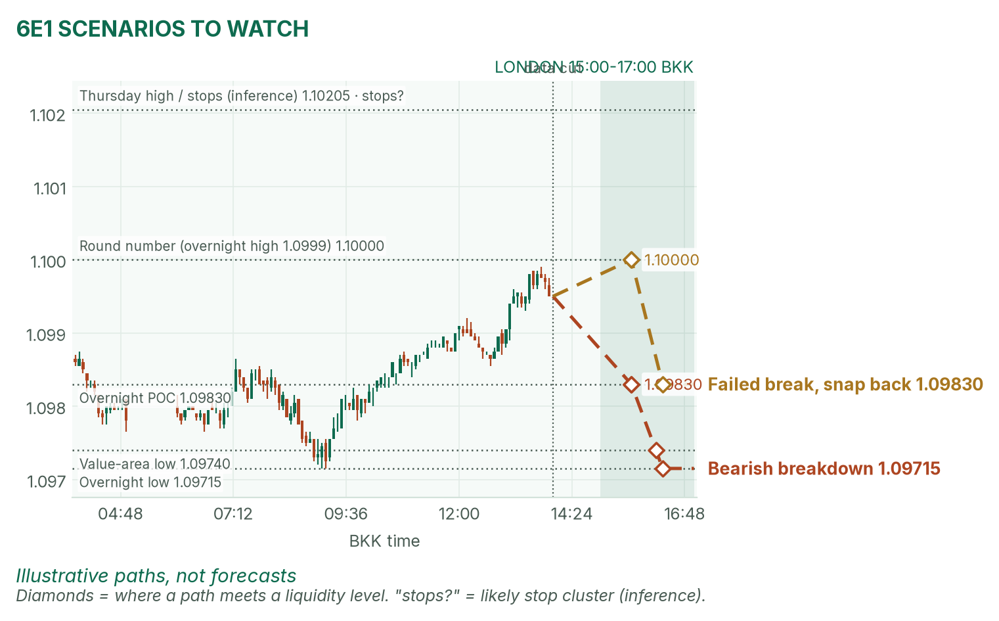

JIM · LONDON TRADE SHEET · FRI NOV 20 · 2026-11-20
Gold crashed to a 14-month low overnight, then bounced 46 points. The euro is pressing 1.1000. London gets small, defined bets only.
Window 15:00–17:00 BKK (UK on GMT). Data cut 14:00 BKK: GC 3,561.2, 6E 1.0995 (Dec, TopstepX, last completed 5-minute bar). Levels only, flat by 17:00. Ideas, not advice. April's pre-London brief (~13:00 BKK) was read.
Summary
Risk first: gold is in forced selling. Overnight range 123 points versus a 16-point median London range. Small, defined risk only.
GC: buy only a failed dip under 3,544.1, entry 3,543, stop 3,533, targets 3,553 and 3,558. About 30%; it may not fill.
6E: buy a break above 1.1000, entry 1.1001, stop 1.0990, targets 1.1012 and 1.1018. About 27%.
Lagarde speaks at 15:15, inside the window: no new entries 15:10–15:17.
The market story
The AI sell-off went global and gold got sold for cash. When stocks fall hard, funds sell what is easy to sell to cover margin calls (demands to top up losing positions), so gold fell with stocks even as yields dropped (April's brief, via Investing.com and CNBC). Markets price about 97% odds of a December Fed hike (CME FedWatch via April), which also weighs on gold.
Gold fell from 3,638.1 (06:05) to 3,514.9 (12:15), then bounced to 3,561.2. The busiest overnight price, the POC, is 3,598, far above. The euro climbed from 1.09715 (09:05) to 1.0999 (13:45) as the dollar eased. My read: gold is bearish on the higher timeframe but stretched; the euro leans up while the dollar softens.
News (BKK)
Time
Event
Forecast
Prior
Read
14:00
UK retail sales, German PPI
0.0% (UK)
not verified
Out before the window.
15:15
ECB's Lagarde speaks
–
–
Hawkish = euro up; dovish = euro down. Inside the window.
20:25
Fed's Waller speaks
–
–
Half-point hike talk = gold lower. After the window.
22:00
Michigan sentiment (final)
51.7
not verified
After the window.
No-trade zone: 15:10–15:17 around Lagarde (5 minutes before to 2 after). Source: April's calendar (Kinzan, Federal Reserve).
Levels to watch
Level
GC
6E
Thursday high / low (Thu 06:00–05:00)
3,759.5 / 3,620.6
1.10205 / 1.0966
Overnight high / low (since 06:00)
3,638.1 / 3,514.9
1.0999 / 1.09715
Overnight POC
3,598
1.0983
Overnight value area
3,520–3,605
1.0974–1.0997
Last-hour high / low
3,567.3 / 3,544.1
1.0999 / 1.0988
Typical London range (last 4, median)
about 16 points
about 20 pips
Gold (GC1)
Bias: down on macro and the daily chart, but price is stretched after a 4.5% drop. The London gold rule is to mark the 15:00–15:30 range and fade its edges back toward the POC; today the POC sits above, so the fade is a long from a failed dip. My volatility model expects roughly 3,553 to 3,569 (four sessions, a small sample).
The trade: buy a failed dip
Entry
3,543 after 15:30, only if a dip under the 3,544.1 last-hour low closes a 5-minute bar back above 3,544
Stop
3,533, under the dip
Targets
1R partial 3,553 · full target 3,558 (1.5R)
Cancel
Gold trades 3,567.3 before the dip, a 15-minute close below 3,533, or no fill by 16:30
Probability
~30%, an estimate. Basis: GC London range fades did best in our 42-session study (not significant), cut for trading against a strong trend.
Why: after a crash, first dips often get bought by short-sellers taking profit. No reclaim of 3,544, no trade. April partly agrees: her base case is that ranges hold, but she warns of further breaks lower.

GC 5-minute bars to the 14:00 cut. The buy waits for a failed dip under the last-hour low.

Illustrative paths, not forecasts.
Scenarios to watch
Bearish break: a 15-minute close below 3,544.1 that holds. Aims for the 3,514.9 low, where sell stops likely sit (inference).
Bullish breakout: a 15-minute close above 3,567.3. Aims for the 3,598 POC.
Euro (6E1)
Bias: mildly up as US yields and the dollar ease. The 6E London rule is to trade breakouts of the 15:00–15:30 range. A pip is 0.0001. Buy stops likely sit above 1.1000 and Thursday's 1.10205 high (my inference).
The trade: bullish breakout
Entry
Buy stop 1.1001 after 15:30, one tick over 1.1000; skip if the 30-minute range high is already above 1.1005
Stop
1.0990, under the last-hour low
Targets
1R partial 1.1012 · full target 1.1018 (1.55R), just under Thursday's high
Cancel
A trade below the 1.0983 POC before the fill, or no break by 16:30
Probability
~27%, an estimate. Basis: 6E London range breakouts averaged +0.31R over 26 sessions (not significant), cut for Lagarde risk.
Why: the euro has risen steadily since 09:05 and the round number holds stops. April partly agrees: she sees the euro flat and ranges holding.

6E 5-minute bars to the 14:00 cut. The entry sits one tick over 1.1000.

Illustrative paths, not forecasts.
Scenarios to watch
Bearish breakdown: a 5-minute close below the 1.0983 POC. Aims for the 1.09715 low.
Failed break, snap back: a poke over 1.1000 that closes back under it. Aims for 1.0983.
NQ (not traded): 26,344.25 at the cut, inside its 26,271–26,603.5 overnight range.
Before you click
ORB bases. GC London: 15:00–15:30 range, fade to POC. GC NY: 20:20 COMEX open until a 2-minute candle's volume drops below half the first two's average, fade to POC. 6E London: 15:00–15:30 range, trade breakouts. NQ NY: 21:30–21:35 range, trade breakouts.
Checklist. Room to max loss? Daily rules OK? No release within 30 minutes? With the bias? At a marked level? Setup tagged? Entry, stop, 1R partial, target set? Calm, not chasing?
Reset (60 seconds). Hands off the mouse. Breathe in 4, hold 4, out 6, five times. Name the feeling in one word. Say the plan aloud. "Eager" or "frustrated"? Wait 5 minutes.